การใช้งาน thClaws สำหรับพนักงาน SiS
วันที่ 1 · 19 ต.ค. 2026 · 100 นาที
SiS Distribution (Thailand) PCL. · sis.thclaws.ai
หัวข้อ Day 1 — 10 ช่วง
รวม 100 นาที · การ์ดที่เน้น 2 ใบ คือช่วงที่คุณต้องลงมือเอง
ตรวจสอบความพร้อมก่อนเริ่ม
- เคยใช้ Chat AI ทั่วไป (ChatGPT / Claude)?
- ได้รับบัญชีของบริษัทเรียบร้อยแล้ว?
- เคยต่อ VPN ขององค์กรหรือยัง?
- เครื่องบริษัทอนุญาตให้ติดตั้งโปรแกรมไหม?
ถ้าเครื่องบล็อกการติดตั้ง — ยังทำทุกอย่างบนเว็บได้ ช่วง 1.5 ใช้เบราว์เซอร์ล้วน ไม่ต้องติดตั้งอะไร
thClaws คืออะไร
thClaws คือ AI Agent Platform เป็น Desktop App รันบนเครื่องของคุณเอง และ มี Cloud Version ทำงานผ่าน Web Browser ได้
ทั้งหมดรวมอยู่ใน binary เดียว — คุยเป็นภาษาธรรมชาติว่าต้องการอะไร แล้ว agent จะอ่านไฟล์ รันคำสั่ง ใช้ tool
Chat ตอบ — Agent ทำงาน
ไม่แตะไฟล์ในเครื่องคุณ
AI Agent Platform (Desktop App) รันบนเครื่อง — ไม่ใช่แค่หน้าต่างแชต
AI Agent Platform (Cloud) รันบน server
ตารางเทียบ: Chat AI ทั่วไป กับ thClaws
| Chat AI ทั่วไป | thClaws | |
|---|---|---|
| ไฟล์ในเครื่อง | มองไม่เห็นเอง | อ่านไฟล์ในเครื่องคุณ |
| คำสั่งระบบ | ทำไม่ได้ | รันคำสั่ง |
| ผลลัพธ์ | ข้อความในแชต | สร้างไฟล์จริงในเครื่องคุณ |
| ความปลอดภัย | — | ขออนุญาตก่อนแก้ข้อมูล (permission) |
| งานหลายขั้น | ตอบรวดเดียว | ทำงานเป็นขั้นตอนต่อเนื่องได้ |
| จำระยะยาว | จำแค่ในบทสนทนา | จำได้ด้วย AGENTS.md · memory · KMS |
ตารางนี้ไม่บอกว่าใครเก่งกว่า — บอกว่า งานแบบไหนทำได้
thClaws ไม่ใช่คู่แข่งของโมเดล
รองรับหลาย provider — สลับไปมาด้วย
/modelหรือ/provider
Claude · GPT · CodexGemini · Gemma · Qwen (DashScope)- โมเดลไทยก็มี — NSTDA Thai LLM: OpenThaiGPT · Typhoon · Pathumma · THaLLE
- ระบบ SiS ให้ใช้ provider ชื่อ
sis→ โมเดลจาก Dashscope อาทิ Qwen 3.8
โมเดลเป็น "เครื่องยนต์" — thClaws เป็น "รถ" ที่เลือกเครื่องยนต์ได้
3 platform ของ thClaws — ใช้ตัวไหนเมื่อไร
sis.thclaws.ai คือระบบ thClaws.cloud ที่ SiS Distribution (Thailand) PCL. ติดตั้งไว้ใช้องค์กรโดยเฉพาะ ทำงานบน server และมี desktop app เป็นขององค์กรเองเฉพาะ
คอร์สนี้ใช้ platform 3 เป็นหลัก — ด้านบนมีไว้ให้เห็นภาพว่า thClaws มีกี่แบบ
9 surface ใน App เดียว · หลาย agent หนึ่ง workspace
เก้า surface รวมอยู่ใน App เดียว — ใช้ Agent loop, Session และ tool registry ชุดเดียวกัน
| surface | ใช้โดย |
|---|---|
| Desktop GUI · CLI REPL · โหมดไม่โต้ตอบ · Webapp | คน |
| LINE · Telegram · Messenger | คน (ผ่านมือถือ) |
| thClaws Remote | คน (สั่งเครื่องตัวเองผ่านเว็บ) |
| AI Agent (API Server) | ซอฟต์แวร์อื่น |
สูงสุด 8 agents ต่อหนึ่ง workspace — agent แต่ละตัวเป็น "โฟลเดอร์" ของตัวเอง
เดโมสด: สั่งงานเดียว ได้ไฟล์จริง
อ่าน meeting_notes.txt แล้วเขียนสรุปงานเป็น bullet 3 ข้อ ลงไฟล์ work-summary.md→ work-summary.md
สั่งเป็นภาษาไทยธรรมดา — ไม่ต้องเขียนโค้ด ไม่ต้องจำไวยากรณ์
เตรียมความพร้อม 1/2 — เครื่องและเบราว์เซอร์
| ต้องมี | รายละเอียด |
|---|---|
| เครื่อง | macOS (installer .pkg) · Windows x64 · Linux x86_64 — มีตัวติดตั้งครบทั้งสาม |
| เบราว์เซอร์ | ใช้รุ่นใหม่ที่อัปเดตล่าสุด — Google Chrome · Safari · Microsoft Edge |
เปิด
sis.thclaws.aiขึ้นหน้าแรกได้ = ผ่านข้อนี้
เตรียมความพร้อม 2/2 — บัญชี และ VPN
sis.thclaws.ai จาก web browser หรือ แอปเดสก์ท็อปยังไม่มีบัญชี? หน้า Sign in ไม่มีปุ่มสมัครบัญชีเอง พนักงาน SIS มี email องค์กรสามารถ sign in จาก Continue with Microsoft — หากไม่ได้ให้ติดต่อผู้ดูแลระบบ SiS
ก่อนวันเรียน: ทดสอบ VPN ให้ได้ — ถ้าต่อไม่ได้ แจ้งผู้สอนล่วงหน้า
Cloud Version vs Desktop Version — ใช้ตัวไหนเมื่อไร
| Cloud (hosted workspace) | Desktop | |
|---|---|---|
| ติดตั้ง | ไม่ต้องติดตั้ง ใช้ผ่านเบราว์เซอร์ | ติดตั้งบนเครื่อง |
| ไฟล์งาน | อยู่ใน workspace บนคลาวด์ | เข้าถึงไฟล์จริงในเครื่องคุณ |
| ต้องต่อ VPN | ไม่ต้อง | ต้องต่อ |
| เหมาะกับ | งานที่ไม่แตะไฟล์ในเครื่อง | งานที่ต้องจัดการไฟล์ของตัวเอง |
- Cloud: "Run thClaws in the cloud — pods scale to zero after 30 min idle; first click after a pause warms them in ~10s."
- เว็บกับแอปเชื่อมกันด้วย access key ตัวเดียว ⇒ ไม่ต้องเลือกอย่างเดียว ใช้คู่กันได้
ลงชื่อเข้าเว็บ — 2 ทาง
sis.thclaws.aiSign in/loginContinue with Google— เข้าด้วยบัญชี GoogleContinue with Microsoft— เข้าด้วยบัญชี Microsoft
"พนักงานของ SIS ใช้ Sign in ด้วย Continue with Microsoft"
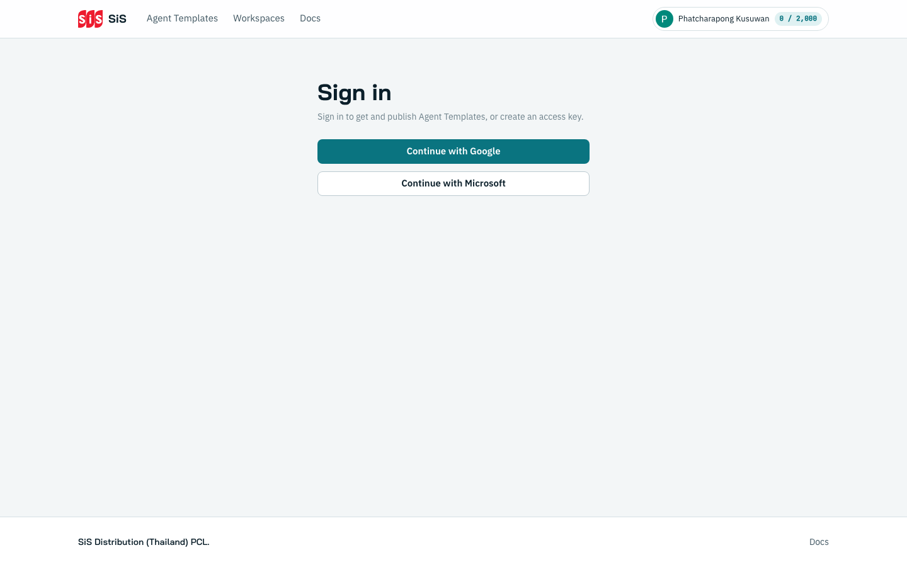
หน้าเว็บ SiS — ส่วนต่าง ๆ
SiS (กลับหน้าแรก) · Agent Templates · Workspaces · DocsBrowse Agent Templates · รายการ workspace · ตาราง Usage
เมนูหลังล็อกอิน — WORK กับ ACCOUNT
| กลุ่ม | รายการ | ไปที่ |
|---|---|---|
| WORK | Workspaces | /dashboard |
| Agent Templates | /templates | |
| thClaws Remote | /talk | |
| Download | /download | |
| ACCOUNT | Usage | /credit/usage |
| Access keys | /access-keys |
Docs— อยู่บนแถบนำทางด้านบน (/manual)
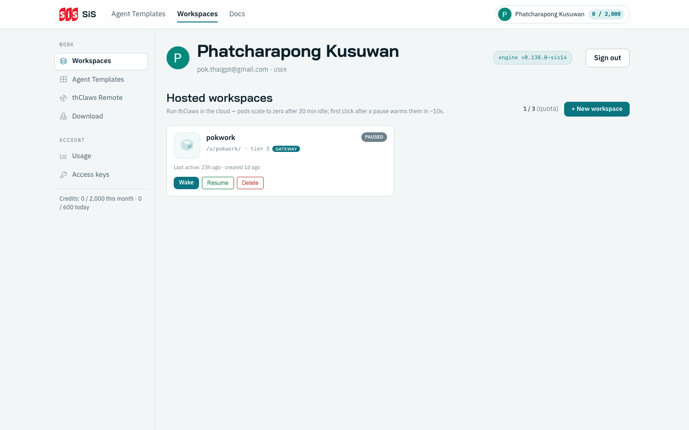
เมนูบัญชี + วิธีอ่านตัวเลขเครดิต
กดชื่อตัวเอง หรือตัวเลขเครดิตที่มุมขวาบน จะเปิดเมนูลัด
- ชื่อ + อีเมล + บทบาท (
USER) - บรรทัดเครดิต:
Credits: 0 / 2,000 this month · 0 / 600 today - ทางลัดไป:
Workspaces·Agent Templates·thClaws Remote·Usage·Access keys Sign out— ออกจากระบบ
วิธีอ่านเครดิต:
ใช้ไป / วงเงิน—0 / 2,000 this month= เดือนนี้ใช้ไป 0 จากวงเงิน 2,000
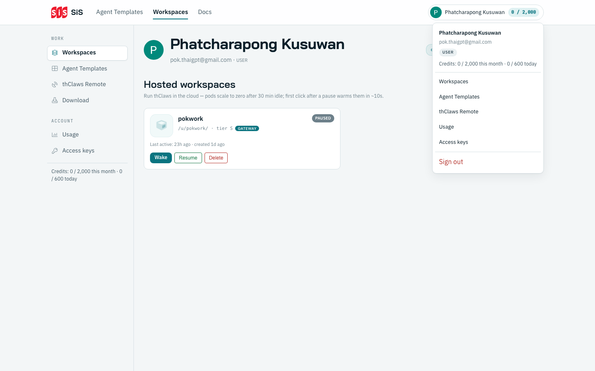
Workspaces — จุดเริ่มต้นของทุกอย่าง
agent ทำงานใน workspace — หากไม่มีต้องสร้าง workspace ขึ้นมาก่อน
- หัวข้อ: "Hosted workspaces"
- โควตา:
ใช้ไป / ทั้งหมด (quota)เช่น1 / 3 (quota) - ปุ่ม
+ New workspace - การ์ด workspace มี ชื่อ · พาธ (
/u/<slug>/) · tier · ป้ายGATEWAY· สถานะ · ใช้ล่าสุด
"Run thClaws in the cloud — pods scale to zero after 30 min idle; first click after a pause warms them in ~10s."
สร้าง workspace ใหม่
+ New workspaceName · Slug (optional, a–z 0–9 –)Create workspaceCancel เพื่อยกเลิก- URL จะเป็น
/u/<your-handle>/<slug>/ - ถ้าเว้น Slug ว่าง ระบบตั้งให้จากชื่อ
สร้างไม่ได้เพราะโควตาเต็ม? เมื่อใช้ครบ (เช่น
3 / 3 (quota)) ต้องลบ workspace เดิมก่อน
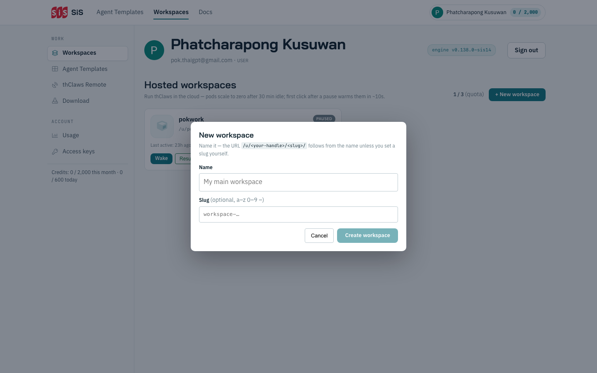
เปิดใช้งาน workspace + สถานะต่าง ๆ
| สถานะ | ปุ่มที่ใช้ได้ |
|---|---|
READY (พร้อมใช้) | Open ↗ · Pause · Delete |
PAUSED (ถูกพักเพราะ idle) | Wake / Resume · Delete |
| ระหว่างปลุก | provisioning — รอให้ขึ้น READY ก่อนจึงกด Open ได้ |
Deleteลบ workspace และข้อมูลทั้งหมด — ยืนยันก่อนกดทุกครั้ง
หน้าตา workspace — 4 แท็บ
| แท็บ | ใช้ทำอะไร |
|---|---|
| Chat | คุยกับ agent — ที่ทำงานหลักของวันนี้ |
| Terminal | รันคำสั่ง shell ใน workspace ตรง ๆ |
| Files | ดูไฟล์ที่ agent สร้าง · คลิกดูตัวอย่างได้ |
| UI | เลือกหน้าบ้าน (GUI Shell) ที่จะใช้ |
4 แท็บคือ workspace เดียวกัน ไม่ใช่ 4 โปรแกรม · มีปุ่ม Full-screen UI (⌘⇧U) · แถบล่างสุดแสดงพาธปัจจุบัน (
/workspace)
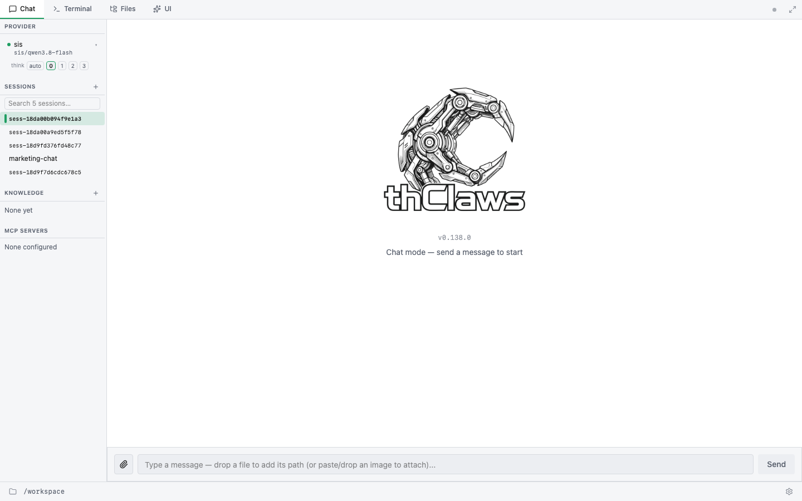
แถบด้านซ้ายของ workspace — 4 ส่วน
| ส่วน | รายละเอียด |
|---|---|
| PROVIDER | ตัวเลือกโมเดล (sis → sis/qwen3.8-flash) · สวิตช์ think · ระดับการคิด 0–3 |
| SESSIONS | สร้าง session ใหม่ · ย้อนดูของเดิม |
| KNOWLEDGE | คลังความรู้ของ workspace — ว่างจะขึ้น None yet |
| MCP SERVERS | รายการ MCP server — ว่างจะขึ้น None configured |
โมเดลที่ระบบ SiS ให้ใช้คือ
sis/qwen3.8-flash— เลือกได้จากช่อง PROVIDER
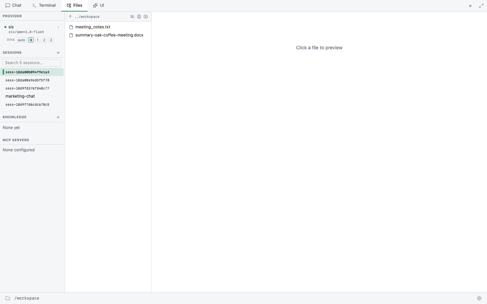
คำสั่งแรกของคุณ
คุณคือใคร และมีไฟล์อะไรบ้างในระบบ[tokens: 937in/464out · 8s]พิมพ์ข้อความ "คุณคือใคร และมีไฟล์อะไรบ้างในระบบ" · กด
Send
ถ้าขึ้นปุ่ม
Allowให้กดได้เลย — นั่นคือโหมด permission =ask(ช่วง 1.8 จะอธิบาย)
ส่งไฟล์ขึ้น workspace
Upload files_uploads/ไฟล์ที่ agent สร้าง ไปอยู่
workspace/· ไฟล์ที่คุณอัปโหลด ไปอยู่_uploads/— คนละที่กัน
ดูได้ทั้งคู่ในแท็บ Files
- ไฟล์ที่ใช้ในคอร์สวันนี้:
meeting_notes.txt
ลงมือทำพร้อมกัน — Hands-on 1
- สร้าง workspace ของตัวเอง 1 อัน
- กด
Open ↗แล้วรอจนขึ้นREADY - ส่งคำสั่งแรก และได้คำตอบกลับมา
- อัปโหลดไฟล์ 1 ไฟล์ แล้วเห็นไฟล์ในแท็บ
Files
ยังไม่ขึ้น
READY? รอ ~10 วินาทีก่อนกดOpenอีกครั้ง · ติดตรงไหนยกมือ ผู้สอนเดินช่วยรายคน
แอปเดสก์ท็อป: ฉบับองค์กร vs ฉบับสาธารณะ
| ฉบับองค์กร | ฉบับสาธารณะ | |
|---|---|---|
| โหลดจาก | หน้า Download ขององค์กร (/download) | เว็บ thClaws สาธารณะ |
| นโยบาย | carries your organisation's signed policy, which fixes the models, the gateway, and a few features | นโยบายของตัวเอง |
| โมเดลที่ได้ | โมเดลขององค์กรผ่าน gateway | โมเดลของตัวเอง |
ข้อควรระวัง ตัวติดตั้งสองตัวหน้าตาเหมือนกัน แต่ผูกนโยบายต่างกัน — ผิดตัวคือใช้โมเดลองค์กรไม่ได้
ดาวน์โหลด: 3 แพลตฟอร์ม
| แพลตฟอร์ม | ขนาด |
|---|---|
macOS — installer .pkg | 67 MB |
| Windows x64 | 86 MB |
| Linux x86_64 | 33 MB |
ทั้งสามตัวเป็น
unsigned— ต้องอนุญาตเองตอนเปิดครั้งแรก
- ปุ่ม copy ข้างไฟล์ใช้คัดลอก SHA-256 ไว้ตรวจว่าดาวน์โหลดครบ
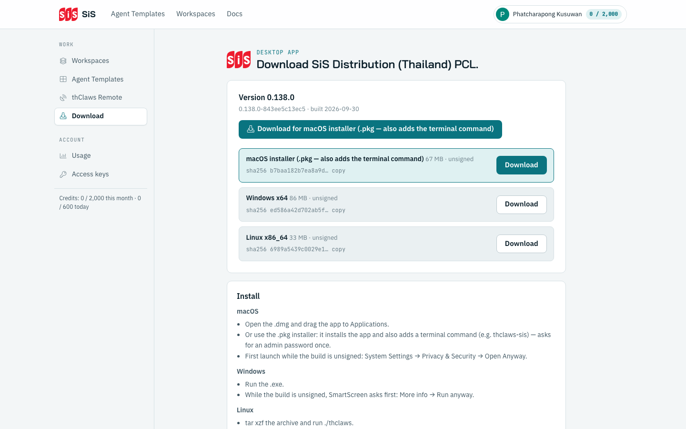
วิธีติดตั้งแต่ละแพลตฟอร์ม
| แพลตฟอร์ม | สิ่งที่ต้องทำ |
|---|---|
| macOS | System Settings → Privacy & Security → Open Anyway |
| Windows | More info → Run anyway |
| Linux | tar xzf … แล้วรัน ./thclaws |
macOS กับ Windows จะโดนบล็อกครั้งเดียว — เพราะไฟล์เป็น
unsignedไม่ใช่ไวรัส
"Then connect to the company network or VPN, open the app and use Settings → Sign in with browser."
ติดตั้งเสร็จแล้วยังไม่ต้องลงชื่อ — ช่วงถัดไปคือขั้นตอนนั้นโดยเฉพาะ
เชื่อมต่อ gateway กับ thClaws EE — 5 ขั้น
- ขั้น 1 · ต่อ VPN — เครือข่ายองค์กร
- ขั้น 2 · เปิดแอป — แอปเดสก์ท็อปฉบับองค์กร
- ขั้น 3 · Sign in with browser —
Settings → Sign in with browser - ขั้น 4 · Allow —
Sign In to SIS thClaws·DESKTOP SIGN-IN - ขั้น 5 · จุดเขียว —
You're signed in·PROVIDERพร้อมใช้
เว็บกับแอปเชื่อมกันด้วย access key ตัวเดียว — ไม่มีคีย์แยกสำหรับ gateway
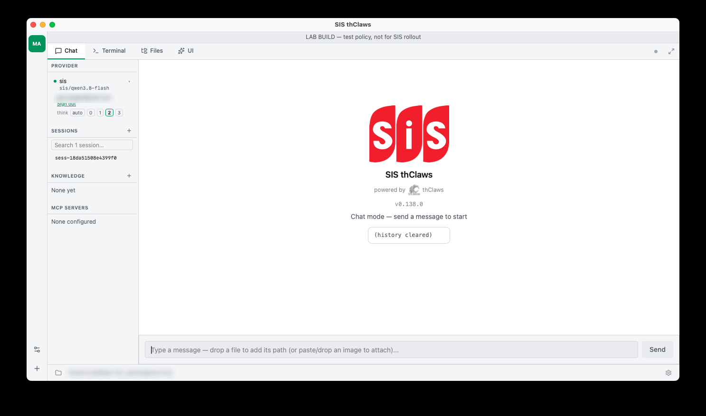
หน้า DESKTOP SIGN-IN — อ่านให้ออกก่อนกด
"The app will use your organisation's AI models as you. Your usage is recorded under your account."
"Only allow this if you just started a sign-in from the SiS Distribution (Thailand) PCL. app. You can revoke it any time under Access keys."
ข้อความนี้บอก 3 อย่าง: ใช้โมเดลองค์กรแทนคุณ · การใช้ถูกบันทึกในชื่อคุณ · ยกเลิกได้ที่
Access keys
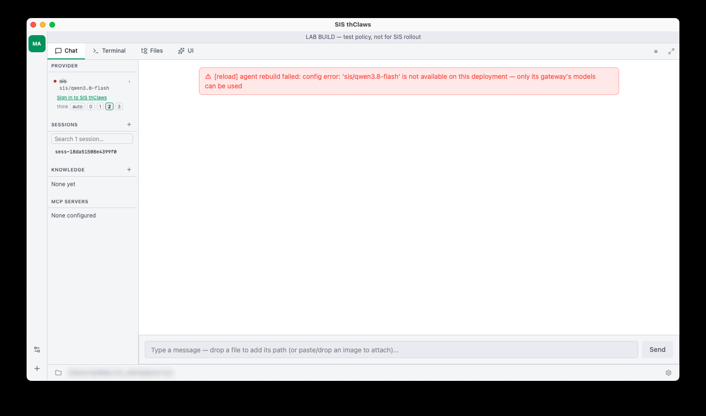
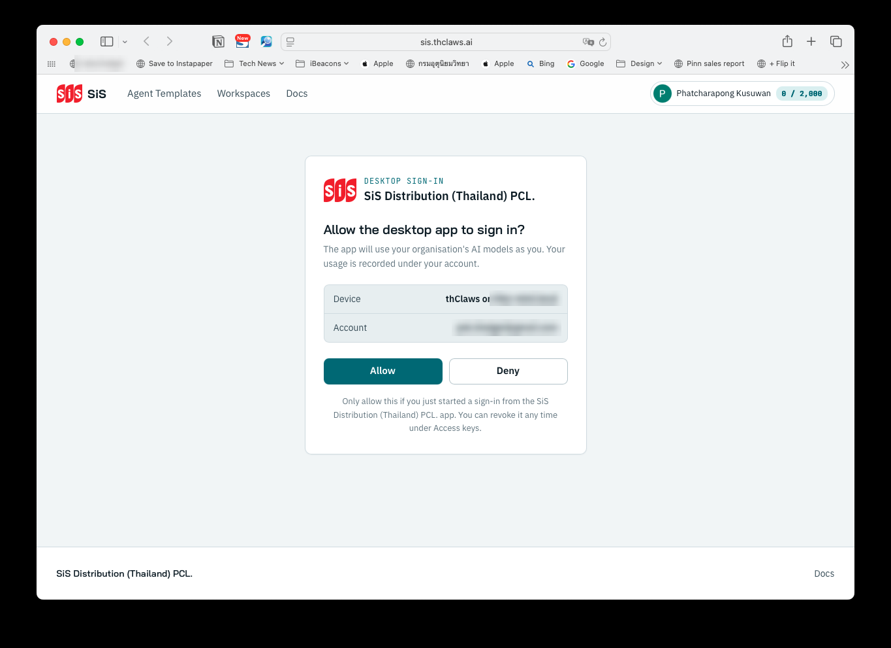
ลงมือทำพร้อมกัน — Gate วัน 1
- ต่อ VPN ขององค์กรได้
- เปิดแอป แล้วไป
Settings → Sign in with browser - กด
Allowบนหน้าDESKTOP SIGN-IN - เห็นจุดสถานะเขียวในแอป
Gate วัน 1: ผู้เรียน ≥ 80% เห็นจุดสถานะเขียวในแอป
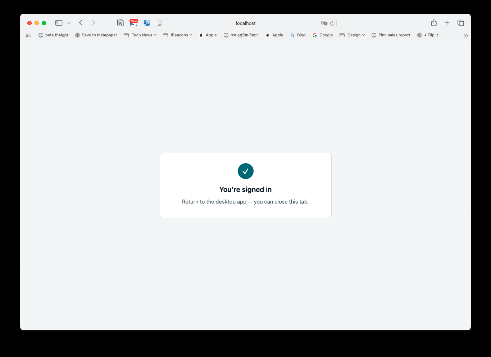
ยังไม่เขียว? ผู้สอนเดินช่วยรายคน · ถ้าติดตั้งไม่ได้ ให้ทำข้อ 1–3 บน hosted workspace แทน
Permission: auto · ask · plan ต่างกันอย่างไร
| โหมด | พฤติกรรม |
|---|---|
auto | ทุก tool รันเอง ไม่ถาม |
ask | tool ที่เปลี่ยนข้อมูลขออนุญาตก่อน |
plan | read-only ล้วน |
อ่านอัตโนมัติเสมอLs · Read · Glob · Grep
ต้องขออนุญาตWrite · Edit · Bash · WebFetch · WebSearch · Task
Sandboxกันไฟล์นอกโฟลเดอร์งานเสมอ — ไม่ว่าโหมดไหน
ข้อควรระวัง 1/2 — Remote · Key
auto/permissions ask ก่อนเปิด Remotethc_… ตัวเดียว authenticate ทุกอย่างmode / Allow for session กับงานที่ยังไม่เข้าใจ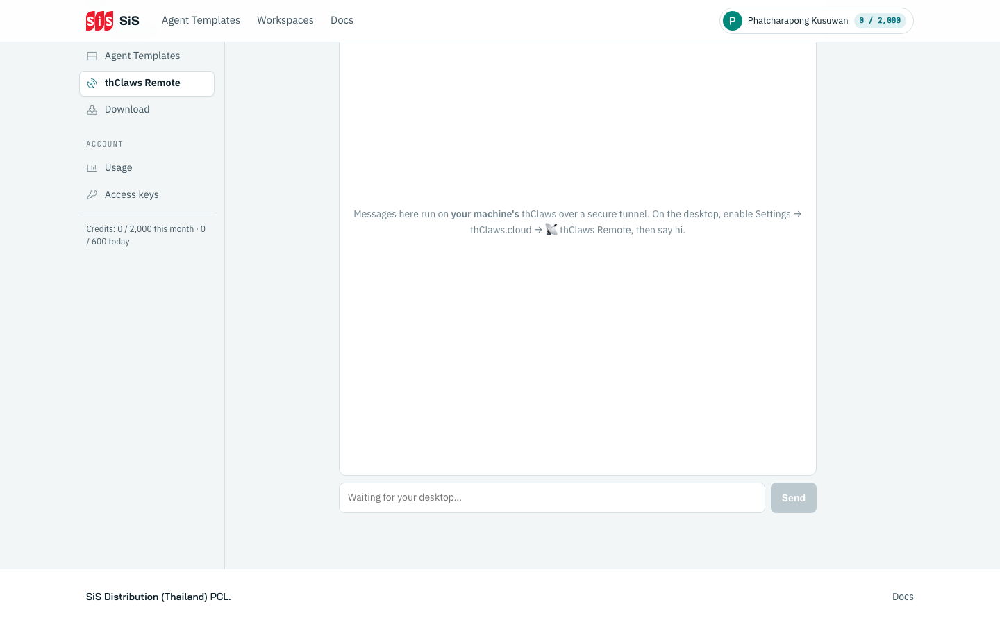
S1 สำคัญที่สุด: Remote +
auto= ใครก็สั่งเครื่องคุณได้
ข้อควรระวัง 2/2 — โฟลเดอร์ · URL · เครดิต · ตัวติดตั้ง · ลบ
/ หรือ home directory เป็น working directoryDownload ขององค์กรเท่านั้นDelete ลบ workspace และข้อมูลทั้งหมดUsage (1/2) — รายงานการใช้งานระบบ
- ตาราง
By workspace— ใช้ที่ workspace ไหน มากน้อยแค่ไหน - เครดิต:
0 / 2,000 this month · 0 / 600 today
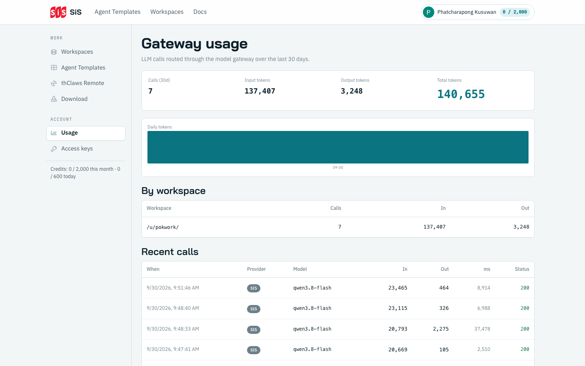
เครดิตแสดง 2 ที่: มุมขวาบนต่อท้ายชื่อ และใต้กลุ่ม
ACCOUNTในแถบซ้าย
Usage (2/2) — รายละเอียดการใช้งานแต่ละครั้ง
| When | Provider | Model | In | Out | ms | Status |
|---|---|---|---|---|---|---|
| เวลาที่เรียก | SIS | sis/qwen3.8-flash | token เข้า | token ออก | เวลาที่ใช้ | 200 |
Server caps at 500.— ตารางโชว์ได้สูงสุด 500 แถว- ไม่แสดงเนื้อหาบทสนทนา — เห็นแค่ตัวเลขและโมเดล ไม่เห็นว่าคุณคุยอะไร
สรุปคือรายงานจะแสดง: บอกได้ว่าเดือนนี้ใช้ไปเท่าไร และงานล่าสุดใช้โมเดลอะไร
Access keys — Key สำหรับเชื่อม Desktop App กับ Cloud
/cloud push · /cloud pull/cloud get <slug>token รูปแบบ
thc_…· revoke ได้ทุกเมื่อ — แต่ revoke = sign out ทุกที่ที่ใช้ token นั้น
- การลงชื่อจากในแอป (sign-in with browser) ระบบสร้าง token ให้เอง โดยใช้ชื่อเครื่องเป็น Label
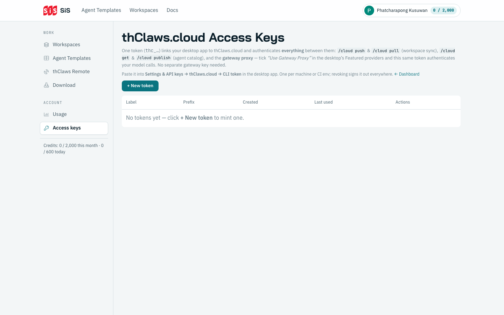
Credits และ Provider keys
No API keys — โมเดลวิ่งผ่าน gateway ขององค์กร
ไม่ต้องเติมเครดิตเอง ไม่ต้องใส่ provider key เอง — องค์กรจ่ายให้
สรุปวันที่ 1 — สิ่งที่ได้เรียนรู้มา
- thClaws คือ AI Agent Platform — Chat ตอบ แต่ Agent ทำงาน
- หน้าเว็บ thClaws Enterprise Edition ขององค์กร =
sis.thclaws.ai— โหลดตัวติดตั้ง · สร้าง workspace · ดูเครดิต - workspace บน Cloud: สร้าง →
Open ↗→ สั่งงานแรก → อัปโหลดไฟล์ - แอปเดสก์ท็อปขององค์กร: โหลดจากหน้า
Downloadแล้วSign in with browserจนได้จุดเขียว
Next Day - 21 ต.ค. — เริ่มใช้งาน workspace แบบละเอียด
คำถาม 3 ข้อก่อนเลิก: อะไรยังไม่ชัด · อะไรทำไม่สำเร็จ · อยากให้เพิ่มเนื้อหาลงลึกเรื่องไหน
Quiz ท้ายวัน 8 ข้อ
- ทำ 2–3 นาทีท้ายคาบ
- เก็บใบคำตอบให้ผู้สอน
- เฉลยทันทีหลังเก็บใบ
3 ทางกลับมาหาความรู้: หน้า Docs ในเว็บ · ใบเช็กลิสต์คำสั่ง (วัน 3) · คู่มือการใช้งานเว็บ SiS thClaws